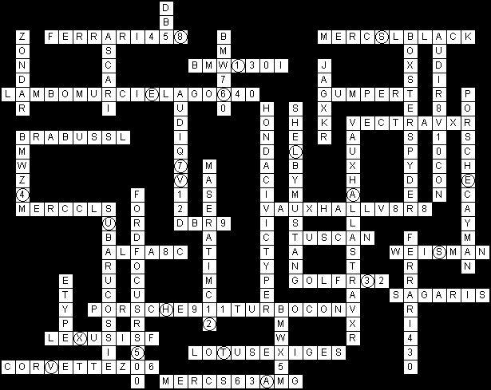

The title of a puzzle is acommon phrase uttered by Jeremy Clarkson on the BBC Television programme, Top Gear. Each clue can be filled with words from the picture grid to produce one of the ridiculous introductions Clarkson has given to Top Gear’s “tame racing driver”, the Stig. In each associated episode, the Stig tests one or more cars, which can be filled into the crossword grid. Car models may be referenced ambiguously, but the appropriate name to enter in the grid is the one Clarkson writes on the magnetic strip for the Power Lap board in the particular episode.
- All his LEGS are HYDRAULIC
episode 6x6: “DBR9”
- All his POTTED-PLANTS are called STEVE
episode 9x6: “SHELBY MUSTANG”
- He can CATCH FISH with his TONGUE
episode 6x3: “WEISMAN” and “TUSCAN”
- He can OPEN a BEER-BOTTLE with his TESTES
episode 11x6: “GUMPERT”
- He could CRACK THE-DAVINCI-CODE in 43-SECONDS
episode 8x3: “LOTUS EXIGE S”
- He has a DIGITAL face
episode 8x2: “CORVETTE Z06”
- He lives in a TREE
episode 6x7: “SAGARIS”
- He once threw a MICROWAVE-OVEN at a TRAMP
episode 9x1: “JAG XKR”
- He once TORE a GOAT in half
episode 16x3: “FORD FOCUS RS500” and “SUBARU COSSIE”
- He ROAMs around the WOODs at NIGHT foraging for WOLVES
episode 6x1: “MERC CLS”
- He SLEEPs UPSIDE-DOWN like a BAT
episode 6x2 “MASERATI MC12”
- He spent all week DAYDREAMing about what RUBENS-BARRICHELLO would look like in a HAM-SLICER
episode 15x4: “PORSCHE 911 TURBO CONV” and “AUDI R8 V10 CON”
- He SUCKS the MOISTURE from DUCKS
episode 9x5: “LAMBO MURCIELAGO 640”
- He thinks CRISPS are ANIMALS
episode 13x3: “MERC SL BLACK”
- He thought STAR-WARS was a DOCUMENTARY
episode 10x6: “HONDA CIVIC TYPE R”
- He was ARRESTED for GOOSEing RUSSELL-BRAND
episode 9x4: “BRABUS SL”
- He’s been BANNED from the CHELSEA-FLOWER-SHOW)
episode 8x4: “BMW Z4 M”
- He’s recently been RELEASING POP RECORDS under the pseudonym of LADY-GAGA
episode 15x6: “FERRARI 458”
- His BREATH smells of MAGNESIUM
episode 6x5: “DB5” and “E TYPE”
- His DROPPINGS have been found as far NORTH as YORK
episode 11x4: “ALFA 8C”
- His EARWAX tastes like TURKISH-DELIGHT
episode 7x2: “PORSCHE CAYMAN”
- His favorite AIRLINE-PILOT is MARK-WEBBER
episode 15x2: “BOXSTER SPYDER”
- His HEART TICKS like a WATCH
episode 6x8: “FERRARI 430”
- His NIPPLES are EXPLOSIVE
episode 16x4: “ZONDA R”
- His SKIN has the texture of a DOLPHIN’S
episode 7x1: “ASCARI”
- His TEETH GLOW-IN-THE-DARK
episode 7x6: “BMW 130I” and “GOLF R32”
- His VOICE can only be heard by CATS
episode 6x9: “VAUXHALL ASTRA VXR”
- If you insult his MOTHER he will HEADBUTT you in the CHEST
episode 8x6: “VECTRA VXR”
- In the AUTUMN all his ARMS go BROWN and FALL off
episode 14x1: “MERC S63 AMG” and “BMW 760”
- One of his EYES is a TESTIS
episode 12x5: “LEXUS IS F”
- The DRINKS-CABINET in his CAR contains fourteen different types of CUSTARD
episode 14x4: “AUDI Q7 V12D” and “BMW X5M”
- When he SLOWS down BRAKE-LIGHTS come on in his BUTTOCKS
episode 10x8: “VAUXHALL V8R8”*
Note: Car is technically the “VAUXHALL VXR8,” however, it is clear that Clarkson wrote it wrong on the strip. We compensated for this by selecting to put the X or the 8 in a place that had no bearing on the grid.
The descriptions in the pictures are here.
Filling everything in yields this grid:

Reading the letters and numbers top to bottom, left to right yields the string 8S1E6L7VE4AUS3H2X5TVA. Parse this as as 8S 1E 6L 7VE 4AUS 3H 2X 5TVA and sort by number to yield 1E 2X 3H 4AUS 5TVA 6L 7VE 8S, or EXHAUST VALVES.